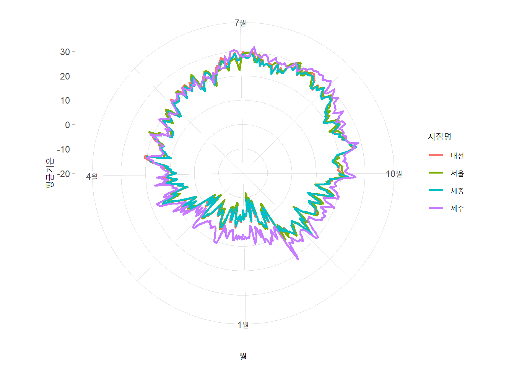

training markdown & GGplot
Rstudio
Data Visualization
train markdown, ggplot https://clauswilke.com/dataviz/
library packages
rm(list = ls())
library(ggplot2)
library(dplyr)
Attaching package: 'dplyr'The following objects are masked from 'package:stats':
filter, lagThe following objects are masked from 'package:base':
intersect, setdiff, setequal, unionlibrary(ggrepel)
library(cowplot)2023/03/15
data_raw <- read.csv("https://vincentarelbundock.github.io/Rdatasets/csv/ggplot2/mpg.csv")
data_raw %>% dim()[1] 234 12data_raw %>% head() X manufacturer model displ year cyl trans drv cty hwy fl class
1 1 audi a4 1.8 1999 4 auto(l5) f 18 29 p compact
2 2 audi a4 1.8 1999 4 manual(m5) f 21 29 p compact
3 3 audi a4 2.0 2008 4 manual(m6) f 20 31 p compact
4 4 audi a4 2.0 2008 4 auto(av) f 21 30 p compact
5 5 audi a4 2.8 1999 6 auto(l5) f 16 26 p compact
6 6 audi a4 2.8 1999 6 manual(m5) f 18 26 p compactdata_raw %>% summary() X manufacturer model displ
Min. : 1.00 Length:234 Length:234 Min. :1.600
1st Qu.: 59.25 Class :character Class :character 1st Qu.:2.400
Median :117.50 Mode :character Mode :character Median :3.300
Mean :117.50 Mean :3.472
3rd Qu.:175.75 3rd Qu.:4.600
Max. :234.00 Max. :7.000
year cyl trans drv
Min. :1999 Min. :4.000 Length:234 Length:234
1st Qu.:1999 1st Qu.:4.000 Class :character Class :character
Median :2004 Median :6.000 Mode :character Mode :character
Mean :2004 Mean :5.889
3rd Qu.:2008 3rd Qu.:8.000
Max. :2008 Max. :8.000
cty hwy fl class
Min. : 9.00 Min. :12.00 Length:234 Length:234
1st Qu.:14.00 1st Qu.:18.00 Class :character Class :character
Median :17.00 Median :24.00 Mode :character Mode :character
Mean :16.86 Mean :23.44
3rd Qu.:19.00 3rd Qu.:27.00
Max. :35.00 Max. :44.00 data_use <- data_raw %>% select(-1)
data_use %>% head() manufacturer model displ year cyl trans drv cty hwy fl class
1 audi a4 1.8 1999 4 auto(l5) f 18 29 p compact
2 audi a4 1.8 1999 4 manual(m5) f 21 29 p compact
3 audi a4 2.0 2008 4 manual(m6) f 20 31 p compact
4 audi a4 2.0 2008 4 auto(av) f 21 30 p compact
5 audi a4 2.8 1999 6 auto(l5) f 16 26 p compact
6 audi a4 2.8 1999 6 manual(m5) f 18 26 p compactggplot(data_use, aes(x=displ, y=hwy)) + geom_point()
ggplot(data_use, aes(x=displ, y=hwy)) + geom_smooth()`geom_smooth()` using method = 'loess' and formula = 'y ~ x'
ggplot(data_use, aes(x=displ, y=hwy)) +
geom_point() +
geom_smooth()`geom_smooth()` using method = 'loess' and formula = 'y ~ x'
2023/03/20
load data
data_file <- read.csv("ncdc_normals.csv")dim(data_file)[1] 2745366 6data_file %>% head() station_id month day temperature flag date
1 AQW00061705 1 1 82.4 C 0000-01-01
2 AQW00061705 1 2 82.4 C 0000-01-02
3 AQW00061705 1 3 82.4 C 0000-01-03
4 AQW00061705 1 4 82.4 C 0000-01-04
5 AQW00061705 1 5 82.4 C 0000-01-05
6 AQW00061705 1 6 82.4 C 0000-01-06data_file %>% sapply(class) # 날짜 형식 변경 station_id month day temperature flag date
"character" "integer" "integer" "numeric" "character" "character" data_file$date <- data_file$date %>% as.Date("%Y-%m-%d")data_file$station_id %>% unique() %>% length()[1] 75014개 역만 정해서 join() 사용
station_loc <- data.frame(station_id = c("USW00014819","USC00042319","USW00093107","USW00012918"),
location = c("Chicago","Death valley","San diego","Houston"))temps_long <- data_file %>% inner_join(station_loc,by="station_id")
temps_long %>% head() station_id month day temperature flag date location
1 USC00042319 1 1 51.0 S 0000-01-01 Death valley
2 USC00042319 1 2 51.2 S 0000-01-02 Death valley
3 USC00042319 1 3 51.3 S 0000-01-03 Death valley
4 USC00042319 1 4 51.4 S 0000-01-04 Death valley
5 USC00042319 1 5 51.6 S 0000-01-05 Death valley
6 USC00042319 1 6 51.7 S 0000-01-06 Death valleyggplot(temps_long, aes(x=date,y=temperature,color=location))+geom_line()
#x축에 표시할 눈금
date_s <- "0000-01-01" %>% as.Date("%Y-%m-%d") #Y는 대문자
date_e <- "0001-01-01" %>% as.Date("%Y-%m-%d")
break_date <- seq.Date(date_s, date_e, by = "3 month")ggplot(temps_long, aes(x=date, y=temperature, color=location))+
geom_line()+
scale_x_date(name="month",
breaks = break_date,
labels = c("jan", "apr", "jul", "oct", "jan"))+
theme_light()
ggplot(temps_long, aes(x=date, y=temperature, color=location))+
geom_line()+
scale_y_continuous(name = "temp",
limits = c(0,100))+
theme_light()
ggplot(temps_long, aes(x=date, y=temperature, color=location))+
geom_line()+
scale_x_date(name="month",
breaks = break_date,
labels = c("jan", "apr", "jul", "oct", "jan"))+
theme_light()+
labs(title = "Fig 2.3", subtitle = "www", caption = "eee", tag = "rrr")
2021년 서울, 대전, 세종, 제주 기온 데이터
data_2021 <- read.csv("https://raw.githubusercontent.com/Sungileo/trainsets/main/OBS_ASOS_DD_20220308125952.csv", fileEncoding = "euc-kr")자료형 확인
data_2021 %>% dim()[1] 1460 6data_2021 %>% head() 지점 지점명 일시 평균기온..C. 최저기온..C. 최고기온..C.
1 108 서울 2021-01-01 -4.2 -9.8 1.6
2 108 서울 2021-01-02 -5.0 -8.4 -1.4
3 108 서울 2021-01-03 -5.6 -9.1 -2.0
4 108 서울 2021-01-04 -3.5 -8.4 0.3
5 108 서울 2021-01-05 -5.5 -9.9 -2.1
6 108 서울 2021-01-06 -7.4 -12.0 -1.9data_2021 %>% sapply(class) 지점 지점명 일시 평균기온..C. 최저기온..C. 최고기온..C.
"integer" "character" "character" "numeric" "numeric" "numeric" 일시 자료형을 date형태로 바꾸기
data_2021$일시 <-data_2021$일시 %>% as.Date("%Y-%m-%d")
data_2021 %>% sapply(class) 지점 지점명 일시 평균기온..C. 최저기온..C. 최고기온..C.
"integer" "character" "Date" "numeric" "numeric" "numeric" 기초통계량 확인
data_2021 %>% summary() 지점 지점명 일시 평균기온..C.
Min. :108.0 Length:1460 Min. :2021-01-01 Min. :-14.90
1st Qu.:126.8 Class :character 1st Qu.:2021-04-02 1st Qu.: 7.90
Median :158.5 Mode :character Median :2021-07-02 Median : 15.00
Mean :166.0 Mean :2021-07-02 Mean : 14.77
3rd Qu.:197.8 3rd Qu.:2021-10-01 3rd Qu.: 23.10
Max. :239.0 Max. :2021-12-31 Max. : 31.70
최저기온..C. 최고기온..C.
Min. :-19.10 Min. :-10.70
1st Qu.: 3.10 1st Qu.: 13.18
Median : 11.10 Median : 20.15
Mean : 10.69 Mean : 19.56
3rd Qu.: 19.60 3rd Qu.: 27.70
Max. : 28.10 Max. : 36.50 breaks 설정
date_21s <- "2021-01-01" %>% as.Date("%Y-%m-%d") #Y는 대문자
date_21e <- "2022-01-01" %>% as.Date("%Y-%m-%d")
break_date_21 <- seq.Date(date_21s, date_21e, by = "3 month")ploting
#data_2021 %>% names()
ggplot(data_2021,aes(x = 일시,y = 평균기온..C., color = 지점명))+
geom_line(linewidth = 1) +
scale_x_date(name ="월",
breaks = break_date_21,
labels = c("1월","4월","7월","10월","1월")) +
scale_y_continuous(name = "평균기온")+
theme_light()
2022년 서울, 대전, 세종, 제주 기온 데이터
data_2022 <- read.csv("https://raw.githubusercontent.com/Sungileo/trainsets/main/OBS_ASOS_DD_20230322080932.csv", fileEncoding = "euc-kr")자료형 확인
data_2022 %>% dim()[1] 2555 6data_2022 %>% head() 지점 지점명 일시 평균기온..C. 최저기온..C. 최고기온..C.
1 108 서울 2022-01-01 -4.3 -10.2 2.3
2 108 서울 2022-01-02 -1.3 -5.2 3.0
3 108 서울 2022-01-03 -1.9 -8.0 2.5
4 108 서울 2022-01-04 -2.5 -5.6 1.0
5 108 서울 2022-01-05 -2.8 -7.8 1.9
6 108 서울 2022-01-06 -2.2 -5.9 3.3data_2022 %>% sapply(class) 지점 지점명 일시 평균기온..C. 최저기온..C. 최고기온..C.
"integer" "character" "character" "numeric" "numeric" "numeric" 일시 자료형을 date형태로 바꾸기
data_2022$일시 <-data_2022$일시 %>% as.Date("%Y-%m-%d")
data_2022 %>% sapply(class) 지점 지점명 일시 평균기온..C. 최저기온..C. 최고기온..C.
"integer" "character" "Date" "numeric" "numeric" "numeric" 기초통계량 확인
data_2022 %>% summary() 지점 지점명 일시 평균기온..C.
Min. :108.0 Length:2555 Min. :2022-01-01 Min. :-11.80
1st Qu.:133.0 Class :character 1st Qu.:2022-04-02 1st Qu.: 8.20
Median :185.0 Mode :character Median :2022-07-02 Median : 16.40
Mean :175.1 Mean :2022-07-02 Mean : 15.27
3rd Qu.:189.0 3rd Qu.:2022-10-01 3rd Qu.: 23.00
Max. :239.0 Max. :2022-12-31 Max. : 32.20
NA's :2
최저기온..C. 최고기온..C.
Min. :-13.800 Min. :-8.60
1st Qu.: 4.225 1st Qu.:12.30
Median : 12.600 Median :20.75
Mean : 11.626 Mean :19.49
3rd Qu.: 19.800 3rd Qu.:27.20
Max. : 28.900 Max. :37.50
NA's :1 NA's :1 breaks 설정
date_22s <- "2022-01-01" %>% as.Date("%Y-%m-%d") #Y는 대문자
date_22e <- "2023-01-01" %>% as.Date("%Y-%m-%d")
break_date_22 <- seq.Date(date_22s, date_22e, by = "3 month")data_2022_2 <- data_2022 %>% filter(data_2022$지점명 %in% c("서울","대전","제주","세종"))
data_2022_2$지점명 %>% unique()[1] "서울" "대전" "제주" "세종"ploting
#data_2021 %>% names()
ggplot(data_2022_2,aes(x = 일시,y = 평균기온..C., color = 지점명))+
geom_line(linewidth = 1) +
scale_x_date(name ="월",
breaks = break_date_22,
labels = c("1월","4월","7월","10월","1월")) +
scale_y_continuous(name = "평균기온")+
theme_light()
mean_temps <- temps_long %>%
group_by(month,location) %>%
summarise(mean = mean(temperature)) %>%
ungroup() %>%
mutate(month = factor(month %>% paste(),
levels = 1:12 %>% paste()))`summarise()` has grouped output by 'month'. You can override using the
`.groups` argument.2023/03/27
ggplot(mean_temps,aes(x = month, y = location, fill = mean))+
geom_tile(width = .95,height = 0.95)+
scale_fill_viridis_c(option = "B",begin = 0.15, end = 0.98,
name = "temperature")+
coord_fixed(expand = FALSE)+
ylab(NULL)
2023/03/29
library(dplyr)
library(ggplot2)data_file <- read.csv("ncdc_normals.csv")
data_file$date <- data_file$date %>% as.Date("%Y-%m-%d")
houston <- data.frame(station_id = c("USW00012918"), location = c("Houston"))
houston_temps <- data_file %>% inner_join(houston,by="station_id")
houston_temps %>% head() station_id month day temperature flag date location
1 USW00012918 1 1 53.9 S 0000-01-01 Houston
2 USW00012918 1 2 53.8 S 0000-01-02 Houston
3 USW00012918 1 3 53.8 S 0000-01-03 Houston
4 USW00012918 1 4 53.8 S 0000-01-04 Houston
5 USW00012918 1 5 53.8 S 0000-01-05 Houston
6 USW00012918 1 6 53.7 S 0000-01-06 Houstondate_s <- "0000-01-01" %>% as.Date("%Y-%m-%d") #Y는 대문자
date_e <- "0001-01-01" %>% as.Date("%Y-%m-%d")
break_date <- seq.Date(date_s, date_e, by = "3 month")ggplot(houston_temps, aes(x=date, y=temperature,color = location))+
geom_line(size = 1,color = "royalblue")+
scale_x_date(name="month",
breaks = break_date,
labels = c("jan", "apr", "jul", "oct", "jan"))+
theme_light()+
ylab("Temperature(℉)")Warning: Using `size` aesthetic for lines was deprecated in ggplot2 3.4.0.
ℹ Please use `linewidth` instead.
#install.packages("cowplot")
library(cowplot)houston_plot <- ggplot(houston_temps, aes(x=date, y=temperature,color = location))+
geom_line(size = 1,color = "royalblue")+
scale_x_date(name="month",
breaks = break_date,
labels = c("jan", "apr", "jul", "oct", "jan"))+
theme_light()+
ylab("Temperature(℉)")arrange multiple plots into a grid
plot_ab <- plot_grid(houston_plot,houston_plot,
nrow = 1,
rel_widths = c(1,2),
labels = c("a","b"))
plot_abc <- plot_grid(plot_ab, houston_plot,
ncol = 1,
rel_heights = c(1.5,2),
labels = c("","c"))
plot_abc
texas_cnt <- read.csv("https://raw.githubusercontent.com/christianmendoza/texas-counties/main/data/texas-counties.csv")
texas_cnt %>% head() county fips_code population area_sq_mi pop_per_sq_mi
1 Anderson 48001 58402 1071 54.53
2 Andrews 48003 18440 1501 12.29
3 Angelina 48005 86506 802 107.86
4 Aransas 48007 24510 252 97.26
5 Archer 48009 8681 910 9.54
6 Armstrong 48011 1839 914 2.01tx_counties <- texas_cnt %>%
select(county,population) %>%
mutate(county = gsub("county","",county),
popratio = population/median(population)) %>%
arrange(desc(popratio)) %>%
mutate(index = 1:n(),
label = ifelse(index<=3|index>n()-3|runif(n())<.04, county, ""))runif(x) x 0~1 사이의 난수
tx_counties county population popratio index label
1 Harris 4728030 2.564286e+02 1 Harris
2 Dallas 2586050 1.402565e+02 2 Dallas
3 Tarrant 2126477 1.153312e+02 3 Tarrant
4 Bexar 2028236 1.100030e+02 4
5 Travis 1305154 7.078609e+01 5
6 Collin 1109462 6.017258e+01 6
7 Denton 941647 5.107099e+01 7
8 Hidalgo 880356 4.774683e+01 8
9 El Paso 867947 4.707381e+01 9
10 Fort Bend 858527 4.656291e+01 10
11 Montgomery 648886 3.519286e+01 11
12 Williamson 643026 3.487504e+01 12
13 Cameron 423029 2.294332e+01 13
14 Brazoria 379689 2.059274e+01 14
15 Bell 379617 2.058884e+01 15
16 Galveston 355062 1.925708e+01 16
17 Nueces 353079 1.914953e+01 17
18 Lubbock 314451 1.705451e+01 18
19 Webb 267945 1.453222e+01 19
20 McLennan 263115 1.427026e+01 20
21 Hays 255397 1.385167e+01 21
22 Jefferson 253704 1.375984e+01 22
23 Smith 237186 1.286398e+01 23
24 Brazos 237032 1.285562e+01 24
25 Ellis 202678 1.099241e+01 25
26 Johnson 187280 1.015728e+01 26
27 Guadalupe 177036 9.601692e+00 27
28 Comal 174986 9.490509e+00 28
29 Midland 167969 9.109936e+00 29
30 Ector 161091 8.736902e+00 30
31 Kaufman 157768 8.556676e+00 31
32 Parker 156764 8.502224e+00 32
33 Randall 143854 7.802039e+00 33
34 Taylor 143326 7.773403e+00 34
35 Grayson 139336 7.557002e+00 35
36 Wichita 130069 7.054399e+00 36
37 Gregg 124201 6.736143e+00 37
38 Tom Green 119411 6.476353e+00 38
39 Potter 116547 6.321022e+00 39
40 Rockwall 116381 6.312019e+00 40
41 Hunt 103394 5.607658e+00 41
42 Bastrop 102058 5.535199e+00 42
43 Liberty 97621 5.294555e+00 43
44 Bowie 92581 5.021206e+00 44
45 Victoria 90964 4.933507e+00 45
46 Angelina 86506 4.691724e+00 46
47 Orange 84742 4.596052e+00 47
48 Coryell 84232 4.568391e+00 48
49 Henderson 83667 4.537748e+00 49
50 Walker 77977 4.229146e+00 50
51 Wise 71714 3.889467e+00 51
52 San Patricio 69699 3.780182e+00 52
53 Harrison 69150 3.750407e+00 53
54 Starr 66049 3.582221e+00 54
55 Nacogdoches 64668 3.507322e+00 55
56 Hood 64222 3.483133e+00 56
57 Van Zandt 61275 3.323300e+00 57
58 Waller 59781 3.242271e+00 58
59 Anderson 58402 3.167480e+00 59
60 Maverick 58056 3.148715e+00 60
61 Hardin 56973 3.089977e+00 61
62 Navarro 53591 2.906552e+00 62
63 Kerr 53161 2.883230e+00 63
64 Rusk 52743 2.860560e+00 64
65 Medina 51981 2.819232e+00 65
66 Polk 51899 2.814785e+00 66 Polk
67 Wilson 51257 2.779965e+00 67
68 Cherokee 51097 2.771288e+00 68
69 Burnet 50954 2.763532e+00 69
70 Lamar 50098 2.717106e+00 70 Lamar
71 Atascosa 49939 2.708482e+00 71
72 Chambers 48865 2.650233e+00 72
73 Val Verde 47564 2.579672e+00 73
74 Caldwell 46791 2.537748e+00 74
75 Kendall 46788 2.537585e+00 75 Kendall
76 Wood 45875 2.488068e+00 76
77 Erath 43378 2.352641e+00 77
78 Cooke 42244 2.291138e+00 78
79 Upshur 41774 2.265647e+00 79
80 Wharton 41721 2.262773e+00 80
81 Jim Wells 38847 2.106899e+00 81
82 Brown 38192 2.071374e+00 82
83 Hopkins 37211 2.018169e+00 83
84 Fannin 36569 1.983350e+00 84
85 Hill 36471 1.978034e+00 85
86 Matagorda 36344 1.971147e+00 86
87 Washington 35891 1.946578e+00 87
88 Howard 34128 1.850960e+00 88
89 Jasper 32975 1.788426e+00 89
90 Hale 32220 1.747478e+00 90
91 Titus 31183 1.691235e+00 91
92 Bee 30924 1.677188e+00 92 Bee
93 Kleberg 30635 1.661514e+00 93
94 Austin 30380 1.647684e+00 94
95 Grimes 30287 1.642640e+00 95 Grimes
96 Palo Pinto 28686 1.555809e+00 96
97 Cass 28560 1.548975e+00 97
98 San Jacinto 27878 1.511986e+00 98
99 Gillespie 27297 1.480475e+00 99
100 Milam 25106 1.361644e+00 100
101 Uvalde 24729 1.341198e+00 101
102 Fayette 24687 1.338920e+00 102
103 Aransas 24510 1.329320e+00 103
104 Shelby 23939 1.298351e+00 104
105 Panola 22675 1.229797e+00 105
106 Lampasas 22252 1.206855e+00 106
107 Houston 22241 1.206259e+00 107
108 Limestone 22119 1.199642e+00 108
109 Llano 21978 1.191995e+00 109
110 Gaines 21895 1.187493e+00 110
111 Bandera 21565 1.169595e+00 111
112 Hockley 21363 1.158640e+00 112
113 Moore 21118 1.145352e+00 113
114 Gray 21030 1.140579e+00 114
115 Colorado 20630 1.118885e+00 115
116 Lavaca 20544 1.114221e+00 116
117 Hutchinson 20495 1.111563e+00 117
118 Montague 20409 1.106899e+00 118
119 Willacy 20316 1.101855e+00 119
120 Tyler 20077 1.088893e+00 120
121 DeWitt 19918 1.080269e+00 121
122 Jones 19873 1.077828e+00 122 Jones
123 Freestone 19774 1.072459e+00 123
124 Calhoun 19727 1.069910e+00 124
125 Gonzales 19641 1.065246e+00 125
126 Bosque 18503 1.003525e+00 126
127 Andrews 18440 1.000108e+00 127
128 Frio 18436 9.998915e-01 128
129 Deaf Smith 18329 9.940883e-01 129
130 Burleson 18051 9.790107e-01 130
131 Young 17977 9.749973e-01 131
132 Eastland 17864 9.688686e-01 132
133 Lee 17706 9.602994e-01 133
134 Falls 17313 9.389847e-01 134
135 Robertson 16958 9.197310e-01 135
136 Scurry 16824 9.124634e-01 136
137 Leon 15959 8.655494e-01 137
138 Jackson 15121 8.200998e-01 138
139 Pecos 15118 8.199371e-01 139
140 Karnes 14754 8.001952e-01 140
141 Nolan 14597 7.916802e-01 141
142 Reeves 14487 7.857143e-01 142
143 Callahan 14115 7.655386e-01 143
144 Zapata 13908 7.543117e-01 144
145 Trinity 13827 7.499186e-01 145
146 Comanche 13775 7.470984e-01 146
147 Madison 13718 7.440069e-01 147
148 Lamb 12898 6.995336e-01 148
149 Wilbarger 12731 6.904762e-01 149
150 Camp 12616 6.842391e-01 150
151 Rains 12509 6.784358e-01 151
152 Dawson 12413 6.732292e-01 152
153 Newton 12241 6.639006e-01 153
154 Morris 12030 6.524569e-01 154
155 Blanco 11886 6.446469e-01 155
156 Terry 11754 6.374878e-01 156
157 Red River 11555 6.266949e-01 157
158 Live Oak 11377 6.170409e-01 158
159 Ward 11194 6.071157e-01 159
160 Franklin 10464 5.675236e-01 160
161 Clay 10263 5.566222e-01 161
162 Sabine 10039 5.444734e-01 162
163 Runnels 9943 5.392667e-01 163
164 Parmer 9813 5.322161e-01 164
165 Ochiltree 9782 5.305348e-01 165
166 Duval 9756 5.291246e-01 166
167 Marion 9645 5.231045e-01 167
168 Zavala 9534 5.170843e-01 168
169 Somervell 9469 5.135590e-01 169
170 Brewster 9450 5.125285e-01 170
171 Stephens 9173 4.975052e-01 171
172 Mitchell 9070 4.919189e-01 172
173 Jack 8712 4.725024e-01 173
174 Archer 8681 4.708211e-01 174
175 Dimmit 8473 4.595401e-01 175
176 Hamilton 8229 4.463065e-01 176
177 San Augustine 7922 4.296561e-01 177
178 Coleman 7735 4.195140e-01 178
179 Yoakum 7607 4.125719e-01 179
180 McCulloch 7533 4.085584e-01 180
181 Winkler 7415 4.021586e-01 181
182 Castro 7374 3.999349e-01 182
183 Dallam 7172 3.889793e-01 183
184 Goliad 7163 3.884912e-01 184
185 Swisher 7008 3.800846e-01 185
186 Brooks 6994 3.793253e-01 186
187 Bailey 6835 3.707018e-01 187
188 Refugio 6756 3.664172e-01 188
189 Childress 6736 3.653325e-01 189
190 La Salle 6670 3.617529e-01 190
191 Presidio 6140 3.330079e-01 191
192 Garza 5863 3.179846e-01 192
193 San Saba 5827 3.160321e-01 193
194 Carson 5746 3.116390e-01 194
195 Lynn 5688 3.084933e-01 195
196 Haskell 5411 2.934700e-01 196
197 Hartley 5397 2.927107e-01 197
198 Delta 5392 2.924395e-01 198
199 Floyd 5350 2.901616e-01 199
200 Martin 5211 2.826228e-01 200
201 Hansford 5159 2.798026e-01 201
202 Crosby 5106 2.769281e-01 202 Crosby
203 Wheeler 4927 2.672199e-01 203 Wheeler
204 Jim Hogg 4801 2.603862e-01 204
205 Crane 4680 2.538236e-01 205
206 Mills 4480 2.429765e-01 206
207 Kimble 4365 2.367393e-01 207
208 Mason 3943 2.138518e-01 208
209 Fisher 3706 2.009979e-01 209
210 Hardeman 3552 1.926456e-01 210
211 Baylor 3477 1.885779e-01 211
212 Knox 3351 1.817442e-01 212
213 Concho 3341 1.812019e-01 213
214 Coke 3321 1.801171e-01 214
215 Sutton 3319 1.800087e-01 215
216 Hudspeth 3287 1.782731e-01 216
217 Hemphill 3271 1.774054e-01 217
218 Donley 3268 1.772427e-01 218
219 Upton 3265 1.770799e-01 219
220 Reagan 3253 1.764291e-01 220
221 Shackelford 3212 1.742054e-01 221
222 Kinney 3130 1.697581e-01 222
223 Crockett 3068 1.663955e-01 223
224 Lipscomb 2931 1.589652e-01 224
225 Hall 2845 1.543009e-01 225
226 Real 2826 1.532704e-01 226
227 Sherman 2798 1.517518e-01 227
228 Collingsworth 2615 1.418267e-01 228
229 Cochran 2516 1.364573e-01 229
230 Schleicher 2429 1.317388e-01 230
231 Culberson 2193 1.189391e-01 231
232 Menard 1982 1.074954e-01 232
233 Jeff Davis 1949 1.057056e-01 233
234 Armstrong 1839 9.973967e-02 234
235 Dickens 1740 9.437032e-02 235
236 Oldham 1717 9.312290e-02 236
237 Irion 1552 8.417399e-02 237
238 Throckmorton 1495 8.108255e-02 238
239 Edwards 1438 7.799111e-02 239
240 Briscoe 1403 7.609285e-02 240
241 Cottle 1381 7.489966e-02 241
242 Sterling 1381 7.489966e-02 242
243 Stonewall 1217 6.600499e-02 243
244 Glasscock 1149 6.231695e-02 244
245 Foard 1080 5.857468e-02 245
246 Motley 1067 5.786962e-02 246
247 Roberts 797 4.322595e-02 247 Roberts
248 Kent 749 4.062263e-02 248
249 Terrell 724 3.926673e-02 249
250 Borden 617 3.346350e-02 250
251 McMullen 608 3.297538e-02 251
252 Kenedy 340 1.844018e-02 252 Kenedy
253 King 258 1.399284e-02 253 King
254 Loving 57 3.091442e-03 254 Loving#install.packages("ggrepel")
library(ggrepel)ggplot(tx_counties,aes(x=index,y=popratio))+
geom_hline(yintercept = 0, linetype = 2, color = "grey40")+
geom_point(size = 1, color = "royalblue")+
geom_text_repel(aes(label = label),
min.segment.length = 0,
max.overlaps = 100)+
theme_light()+
theme(panel.border = element_blank())
label_log10 <- sapply(-2:2,function(i) as.expression(bquote(10^ .(i))))
ggplot(tx_counties,aes(x=index,y=popratio))+
geom_hline(yintercept = 0, linetype = 2, color = "grey40")+
geom_point(size = 1, color = "royalblue")+
geom_text_repel(aes(label = label),
min.segment.length = 0,
max.overlaps = 100)+
scale_y_log10(name = "popnumber/median",
breaks = 10^(-2:2),
labels = label_log10)+
scale_x_continuous(name = "Texas counties",
breaks = NULL)+
theme_light()+
theme(panel.border = element_blank())Warning: Transformation introduced infinite values in continuous y-axis
label_log10 <- sapply(-2:2,function(i) as.expression(bquote(10^ .(i))))
ggplot(tx_counties,aes(x=index,y=popratio))+
geom_hline(yintercept = 1, linetype = 2, color = "grey40")+
geom_point(size = 1, color = "royalblue")+
geom_text_repel(aes(label = label),
min.segment.length = 0,
max.overlaps = 100)+
scale_y_log10(name = "popnum / med",
breaks = 10^(-2:2),
labels = label_log10)+
theme_light()+
theme(panel.border = element_blank())
label_log10expression(10^-2L, 10^-1L, 10^0L, 10^1L, 10^2L)2023/04/03
시군구 인구수 2023년
data_202302 <- read.csv("https://raw.githubusercontent.com/Sungileo/trainsets/main/%ED%96%89%EC%A0%95%EA%B5%AC%EC%97%AD_%EC%8B%9C%EA%B5%B0%EA%B5%AC_%EB%B3%84_%EC%A3%BC%EB%AF%BC%EB%93%B1%EB%A1%9D%EC%84%B8%EB%8C%80%EC%88%98_202302.csv",encoding = "utf-8")
data_202302 %>% head() 행정구역.시군구.별 X2022.11 X2022.12 X2023.01 X2023.02
1 종로구 72666 72524 72479 72773
2 중구 63167 63139 63123 63492
3 용산구 109905 109805 109734 109778
4 성동구 133435 133305 133293 133517
5 광진구 169376 169291 169416 169648
6 동대문구 170154 169873 169716 170766d <- data_202302 %>%
filter(X2023.02>0) %>%
select(행정구역.시군구.별,X2023.02) %>%
mutate(popratio = X2023.02/median(X2023.02)) %>%
arrange(desc(popratio)) %>%
mutate(index = 1:n(),label = ifelse(index<=3|index>n()-3|runif(n())<.04, 행정구역.시군구.별, ""))d 행정구역.시군구.별 X2023.02 popratio index label
1 수원시 530462 6.04349807 1 수원시
2 고양시 462873 5.27346367 2 고양시
3 창원시 456357 5.19922756 3 창원시
4 용인시 432476 4.92715383 4
5 성남시 409466 4.66500330 5
6 청주시 394735 4.49717456 6
7 화성시 391705 4.46265409 7
8 부천시 344060 3.91983959 8
9 남양주시 304430 3.46833914 9
10 천안시 304112 3.46471620 10
11 전주시 296295 3.37565794 11
12 안산시 290729 3.31224508 12
13 송파구 285420 3.25176020 13
14 관악구 285206 3.24932212 14
15 강서구 274186 3.12377242 15
16 평택시 273134 3.11178709 16
17 서구 251983 2.87081596 17
18 달서구 236709 2.69680087 18
19 강남구 233325 2.65824732 19
20 포항시 232471 2.64851778 20
21 김해시 228926 2.60812997 21
22 안양시 227546 2.59240777 22
23 남동구 226328 2.57853123 23
24 시흥시 224558 2.55836580 24
25 제주시 222979 2.54037642 25
26 부평구 219116 2.49636567 26
27 파주시 218787 2.49261740 27
28 덕양구 218420 2.48843621 28
29 노원구 217926 2.48280812 29
30 서구 217163 2.47411534 30
31 은평구 214070 2.43887712 31
32 의정부시 208325 2.37342493 32
33 김포시 202642 2.30867911 33
34 강동구 202589 2.30807528 34
35 북구 198320 2.25943901 35
36 성북구 197673 2.25206781 36
37 분당구 194614 2.21721694 37
38 미추홀구 194606 2.21712580 38
39 북구 192326 2.19115000 39
40 영등포구 189857 2.16302094 40
41 중랑구 187776 2.13931232 41
42 동작구 186053 2.11968237 42
43 구미시 185361 2.11179848 43
44 구로구 184142 2.09791054 44
45 서북구 184065 2.09703329 45
46 양천구 181177 2.06413061 46
47 마포구 180807 2.05991524 47
48 부산진구 179307 2.04282589 48
49 기흥구 174289 1.98565634 49
50 수성구 171571 1.95469046 50
51 광산구 170895 1.94698886 51
52 동대문구 170766 1.94551917 52
53 광주시 170359 1.94088227 53
54 해운대구 170331 1.94056326 54
55 광진구 169648 1.93278192 55
56 원주시 169217 1.92787158 56
57 서초구 168173 1.91597740 57
58 유성구 161894 1.84444141 58
59 권선구 161695 1.84217422 59
60 세종시 160012 1.82299998 60
61 동구 159365 1.81562877 61
62 진주시 159148 1.81315652 62
63 양산시 156375 1.78156402 63
64 연수구 156287 1.78056144 64
65 상록구 155649 1.77329277 65
66 완산구 153612 1.75008545 66
67 아산시 153585 1.74977784 67
68 영통구 153567 1.74957277 68
69 서대문구 146908 1.67370748 69
70 강북구 144506 1.64634174 70
71 덕진구 142683 1.62557249 71
72 수지구 142509 1.62359013 72
73 사하구 141291 1.60971358 73
74 하남시 140594 1.60177273 74
75 남구 139757 1.59223688 75
76 도봉구 138384 1.57659444 76
77 단원구 135080 1.53895231 77
78 춘천시 134241 1.52939367 78
79 서구 133857 1.52501880 79
80 성동구 133517 1.52114521 80
81 익산시 130079 1.48197644 81
82 여수시 128794 1.46733657 82 여수시
83 일산동구 128376 1.46257434 83 일산동구
84 경산시 127901 1.45716271 84
85 계양구 126891 1.44565589 85
86 흥덕구 126077 1.43638207 86
87 순천시 125053 1.42471575 87
88 동안구 124930 1.42331442 88
89 경주시 124099 1.41384693 89
90 북구 123568 1.40779730 90
91 군산시 123427 1.40619090 91
92 북구 122817 1.39924123 92
93 동남구 120047 1.36768291 93
94 동래구 119887 1.36586005 94
95 금천구 119830 1.36521065 95
96 장안구 118785 1.35330508 96
97 남구 118209 1.34674277 97
98 광명시 117838 1.34251601 98
99 일산서구 116077 1.32245312 99
100 처인구 115678 1.31790735 100
101 군포시 113869 1.29729761 101
102 달성군 113231 1.29002894 102
103 수정구 113122 1.28878711 103
104 용산구 109778 1.25068927 104
105 남구 109654 1.24927655 105
106 동구 108829 1.23987741 106
107 양주시 108595 1.23721147 107 양주시
108 중구 107657 1.22652494 108
109 금정구 106851 1.21734227 109
110 성산구 106208 1.21001663 110
111 목포시 104065 1.18560166 111
112 오산시 103606 1.18037232 112
113 거제시 103554 1.17977989 113
114 강릉시 103427 1.17833299 114
115 만안구 102616 1.16909335 115
116 이천시 102612 1.16904778 116
117 중원구 101730 1.15899925 117 중원구
118 충주시 101204 1.15300659 118
119 울주군 100262 1.14227448 119
120 사상구 99040 1.12835236 120
121 의창구 96737 1.10211452 121
122 팔달구 96415 1.09844601 122
123 남구 95795 1.09138241 123
124 연제구 93538 1.06566865 124
125 중구 92950 1.05896963 125
126 청원구 90818 1.03467997 126
127 안성시 90055 1.02598719 127
128 서원구 89968 1.02499601 128
129 서귀포시 88822 1.01193975 129
130 상당구 87872 1.00111650 130
131 수영구 87774 1.00000000 131
132 북구 87526 0.99717456 132
133 진해구 85935 0.97904847 133
134 마산합포구 84783 0.96592385 134
135 서산시 82732 0.94255702 135
136 마산회원구 82694 0.94212409 136
137 당진시 81526 0.92881719 137
138 서구 80960 0.92236881 138
139 구리시 80444 0.91649008 139
140 대덕구 80217 0.91390389 140
141 기장군 79089 0.90105270 141
142 안동시 77831 0.88672044 142
143 남구 76575 0.87241096 143
144 중구 76378 0.87016656 144
145 포천시 73316 0.83528152 145
146 종로구 72773 0.82909518 146
147 김천시 69079 0.78700982 147
148 광양시 69046 0.78663386 148
149 동구 66328 0.75566797 149
150 제천시 65361 0.74465104 150
151 의왕시 64628 0.73630004 151
152 중구 63492 0.72335771 152
153 강서구 62350 0.71034703 153
154 나주시 60088 0.68457630 154
155 양평군 60015 0.68374462 155
156 통영시 59529 0.67820767 156
157 논산시 58089 0.66180190 157
158 정읍시 54645 0.62256477 158
159 영천시 54594 0.62198373 159
160 사천시 54523 0.62117484 160
161 칠곡군 54480 0.62068494 161
162 동구 54342 0.61911272 162
163 영도구 54322 0.61888486 163
164 여주시 54166 0.61710757 164
165 서구 53689 0.61167316 165
166 밀양시 53679 0.61155923 166
167 공주시 52484 0.59794472 167
168 영주시 50731 0.57797298 168
169 보령시 49746 0.56675097 169
170 상주시 49380 0.56258117 170
171 음성군 48378 0.55116549 171
172 홍성군 46787 0.53303940 172
173 동구 46224 0.52662520 173
174 완주군 46061 0.52476815 174
175 동두천시 43841 0.49947593 175 동두천시
176 김제시 43491 0.49548841 176
177 동해시 43265 0.49291362 177
178 무안군 43246 0.49269715 178
179 진천군 42337 0.48234101 179
180 중구 41518 0.47301023 180
181 속초시 41202 0.46941008 181
182 예산군 39943 0.45506642 182 예산군
183 남원시 39832 0.45380181 183
184 문경시 36946 0.42092191 184
185 고흥군 35388 0.40317178 185
186 강화군 35104 0.39993620 186
187 해남군 35092 0.39979949 187
188 홍천군 34572 0.39387518 188
189 삼척시 33542 0.38214050 189
190 태안군 33103 0.37713902 190
191 부여군 32867 0.37445029 191
192 창녕군 32212 0.36698795 192
193 가평군 32152 0.36630437 193
194 화순군 32097 0.36567776 194
195 함안군 30806 0.35096954 195 함안군
196 거창군 30719 0.34997835 196
197 의성군 29019 0.33061043 197
198 과천시 28805 0.32817235 198
199 고창군 28653 0.32644063 199
200 영암군 28401 0.32356962 200
201 예천군 28176 0.32100622 201
202 동구 27815 0.31689339 202
203 부안군 27805 0.31677946 203
204 영광군 27595 0.31438695 204
205 서천군 26661 0.30374598 205
206 고성군 26476 0.30163830 206
207 금산군 26317 0.29982683 207
208 완도군 25774 0.29364049 208
209 울진군 25458 0.29004033 209
210 옥천군 25340 0.28869597 210
211 담양군 24684 0.28122223 211 담양군
212 합천군 24156 0.27520678 212
213 중구 24123 0.27483082 213
214 성주군 24012 0.27356620 214
215 횡성군 23828 0.27146991 215
216 영동군 23799 0.27113952 216
217 하동군 23663 0.26959008 217
218 청도군 23515 0.26790394 218
219 장성군 23398 0.26657097 219
220 남해군 22724 0.25889215 220
221 보성군 22252 0.25351471 221
222 신안군 21901 0.24951580 222
223 평창군 21898 0.24948162 223
224 연천군 21806 0.24843348 224
225 괴산군 21303 0.24270285 225
226 영월군 21192 0.24143824 226
227 함양군 20806 0.23704058 227
228 철원군 20595 0.23463668 228
229 태백시 20223 0.23039852 229
230 장흥군 19757 0.22508943 230
231 영덕군 19735 0.22483879 231
232 산청군 19664 0.22402989 232
233 정선군 19520 0.22238932 233
234 증평군 18663 0.21262561 234
235 강진군 18540 0.21122428 235
236 계룡시 18119 0.20642787 236
237 함평군 18029 0.20540251 237
238 보은군 16983 0.19348554 238
239 봉화군 16822 0.19165129 239
240 고령군 16812 0.19153736 240 고령군
241 인제군 16661 0.18981703 241
242 진도군 16609 0.18922460 242
243 청양군 16513 0.18813088 243
244 곡성군 15493 0.17651013 244
245 고성군 15273 0.17400369 245
246 단양군 15081 0.17181626 246
247 의령군 15068 0.17166815 247
248 임실군 15013 0.17104154 248
249 양양군 14971 0.17056304 249
250 순창군 14191 0.16167658 250
251 청송군 14021 0.15973979 251
252 군위군 13691 0.15598013 252
253 진안군 13528 0.15412309 253
254 구례군 13420 0.15289266 254
255 무주군 12920 0.14719621 255
256 옹진군 12439 0.14171623 256
257 화천군 12049 0.13727300 257
258 장수군 11564 0.13174744 258
259 양구군 10638 0.12119762 259 양구군
260 영양군 9035 0.10293481 260 영양군
261 울릉군 5516 0.06284321 261 울릉군ggplot(d,aes(x=index,y=popratio))+
geom_point(size = 1, color = "royalblue")+
geom_text_repel(aes(label = label),
min.segment.length = 0,
max.overlaps = 100)+
theme_light()+
theme(panel.border = element_blank())
label_log10 <- sapply(-2:2,function(i) as.expression(bquote(10^ .(i))))
ggplot(d,aes(x=index,y=popratio))+
geom_point(size = 1, color = "royalblue")+
geom_text_repel(aes(label = label),
min.segment.length = 0,
max.overlaps = 100)+
scale_y_log10(name = "인구수/중위수",
breaks = 10^(-2:2),
labels = label_log10,
limits = c(10^-1.3,10^1.3))+
theme_light()+
theme(panel.border = element_blank())+
scale_x_continuous(name = "행정구역 (시군구)별 주민등록세대수",
breaks = NULL)
2023/04/05
load data
data_file <- read.csv("ncdc_normals.csv")
data_file %>% sapply(class) # 날짜 형식 변경 station_id month day temperature flag date
"character" "integer" "integer" "numeric" "character" "character" data_file$date <- data_file$date %>% as.Date("%Y-%m-%d")
data_file$station_id %>% unique() %>% length()[1] 7501station_loc <- data.frame(station_id = c("USW00014819","USC00042319","USW00093107","USW00012918"),
location = c("Chicago","Death valley","San diego","Houston"))temps_long <- data_file %>% inner_join(station_loc,by="station_id")
temps_long %>% head() station_id month day temperature flag date location
1 USC00042319 1 1 51.0 S 0000-01-01 Death valley
2 USC00042319 1 2 51.2 S 0000-01-02 Death valley
3 USC00042319 1 3 51.3 S 0000-01-03 Death valley
4 USC00042319 1 4 51.4 S 0000-01-04 Death valley
5 USC00042319 1 5 51.6 S 0000-01-05 Death valley
6 USC00042319 1 6 51.7 S 0000-01-06 Death valleybreak_date[1] "0000-01-01" "0000-04-01" "0000-07-01" "0000-10-01" "0001-01-01"date_lab <- format(break_date,"%B")ggplot(temps_long, aes(x=date,y=temperature,color=location))+
geom_line(linewidth = 1.1)+
scale_x_date(name = "month",
breaks = break_date,
labels = date_lab)+
scale_y_continuous(name = "temperature",
limits = c(0,105))+
coord_polar(theta = "x",
start = pi,
direction = 1)+
theme_light()+
theme(panel.border = element_blank())
ggplot(data_2022_2,aes(x = 일시,y = 평균기온..C., color = 지점명))+
geom_line(linewidth = 1) +
scale_x_date(name ="월",
breaks = break_date_22,
labels = c("1월","4월","7월","10월","1월")) +
scale_y_continuous(name = "평균기온",
limits = c(-20,35))+
coord_polar(theta = "x",
start = pi,
direction = 1)+
theme_light()+
theme(panel.border = element_blank())
pt.4
library(colorspace)
RColorBrewer::display.brewer.all()
US_census <- read.csv("https://raw.githubusercontent.com/Sungileo/trainsets/main/drive-download-20230405T011215Z-001/US_census.csv")
US_regions <- read.csv("https://raw.githubusercontent.com/Sungileo/trainsets/main/drive-download-20230405T011215Z-001/US_regions.csv")popgrowth_df <- US_census %>% left_join(US_regions) %>%
group_by(region,division,state) %>%
summarize(pop2000 = sum(pop2000, na.rm = TRUE),
pop2010 = sum(pop2010, na.rm = TRUE),
popgrowth = (pop2010-pop2000)/pop2000,
area = sum(area)) %>%
arrange(popgrowth) %>%
ungroup() %>%
mutate(state = factor(state,levels = state),
region = factor(region, levels = c("West","South","Midwest","Northwest")))Joining with `by = join_by(state)`
`summarise()` has grouped output by 'region', 'division'. You can override
using the `.groups` argument.popgrowth_df %>% head()# A tibble: 6 × 7
region division state pop2000 pop2010 popgrowth area
<fct> <chr> <fct> <int> <int> <dbl> <dbl>
1 Midwest East North Central Michigan 9938444 9883640 -0.00551 56539.
2 <NA> New England Rhode Island 1048319 1052567 0.00405 1034.
3 South West South Central Louisiana 4468976 4533372 0.0144 43204.
4 Midwest East North Central Ohio 11353140 11536504 0.0162 40861.
5 <NA> Middle Atlantic New York 18976457 19378102 0.0212 47126.
6 South South Atlantic West Virginia 1808344 1852994 0.0247 24038.region_colors <- c("#E69F00","#56B4E9","#009E73","#F0E442")
state_colors <- region_colors[as.numeric(popgrowth_df$region)]state_colors_dark = colorspace::darken(state_colors,0.4)ggplot(popgrowth_df,aes(x = state, y = 100*popgrowth, fill = region))+
geom_col()+
scale_y_continuous(name = "population growth, 2000 to 2010",
labels = scales::percent_format(scale = 1),
expand = c(0,0))+
scale_fill_manual(values = region_colors)+
coord_flip()+
theme_light()+
theme(panel.border = element_blank(),
panel.grid.major.y = element_blank(),
axis.title.y = element_blank(),
axis.ticks.length = unit(0,"pt"),
axis.text.y = element_text(size=10,color = state_colors),
legend.position = c(.58,.68),
legend.background = element_rect(fill="#FFFFFFb0"))Warning: Vectorized input to `element_text()` is not officially supported.
ℹ Results may be unexpected or may change in future versions of ggplot2.
kor_202202 <- read.csv("https://raw.githubusercontent.com/Sungileo/trainsets/main/202202_%EC%A3%BC%EB%AF%BC%EB%93%B1%EB%A1%9D%EC%9D%B8%EA%B5%AC%EB%B0%8F%EC%84%B8%EB%8C%80%ED%98%84%ED%99%A9.csv")
kor_202202 %>% head() 행정구역 행정구역_코드 총인구수 세대수 세대당_인구 남자_인구수
1 서울특별시 1100000000 9508451 4442586 2.14 4615823
2 서울특별시 종로구 1111000000 144575 73763 1.96 70092
3 서울특별시 중구 1114000000 122167 63644 1.92 59446
4 서울특별시 용산구 1117000000 222413 111134 2.00 106881
5 서울특별시 성동구 1120000000 285137 134286 2.12 138866
6 서울특별시 광진구 1121500000 340494 168975 2.02 164226
여자_인구수 남여_비율
1 4892628 0.94
2 74483 0.94
3 62721 0.95
4 115532 0.93
5 146271 0.95
6 176268 0.93kor_202202 %>% sapply(class) 행정구역 행정구역_코드 총인구수 세대수 세대당_인구
"character" "numeric" "numeric" "numeric" "numeric"
남자_인구수 여자_인구수 남여_비율
"numeric" "numeric" "numeric" kor_202202$행정구역_코드 <- kor_202202$행정구역_코드 %>% format()kor_202202_use <- kor_202202 %>%
filter(substr(행정구역,1,2) %in% c("서울","대전","대구","부산")) %>%
filter(substr(행정구역_코드,3,4)!="00") %>%
select(행정구역,총인구수) %>%
arrange(총인구수)kor_202202_use$시도 = sapply(kor_202202_use$행정구역,
function(x) strsplit(x, " ")[[1]][1])
kor_202202_use$시도 = factor(kor_202202_use$시도,
levels = c("서울특별시","대전광역시","대구광역시","부산광역시"))kor_202202_use %>% head() 행정구역 총인구수 시도
1 부산광역시 중구 40582 부산광역시
2 대구광역시 중구 74710 대구광역시
3 부산광역시 동구 88245 부산광역시
4 부산광역시 서구 104618 부산광역시
5 부산광역시 영도구 109991 부산광역시
6 서울특별시 중구 122167 서울특별시kor_202202_use %>% summary() 행정구역 총인구수 시도
Length:54 Min. : 40582 서울특별시:25
Class :character 1st Qu.:207148 대전광역시: 5
Mode :character Median :305946 대구광역시: 8
Mean :309033 부산광역시:16
3rd Qu.:407067
Max. :661452 state_colors <- region_colors[as.numeric(kor_202202_use$시도)]
state_colors_dark <- colorspace::darken(state_colors,0.4)ggplot(kor_202202_use,aes(x = reorder(행정구역, 총인구수),y= 총인구수, fill = 시도))+
geom_col()+
scale_y_continuous(name = "총인구수, 2022년 2월",
expand = c(0,0),
labels = scales::comma)+
scale_x_discrete(aes(color=state_colors))+
scale_color_manual(values = state_colors)+
scale_fill_manual(values = region_colors)+
coord_flip()+
theme_light()+
theme(panel.border = element_blank(),
panel.grid.major.y = element_blank())+
theme(axis.title.y = element_blank(),
axis.line.y = element_blank(),
axis.ticks.length = unit(0,"pt"),
axis.text.y = element_text(size = 6,color = state_colors_dark),legend.position = c(.78,.28),legend.background = element_rect(fill = "#FFFFFFB0"))Warning: Vectorized input to `element_text()` is not officially supported.
ℹ Results may be unexpected or may change in future versions of ggplot2.